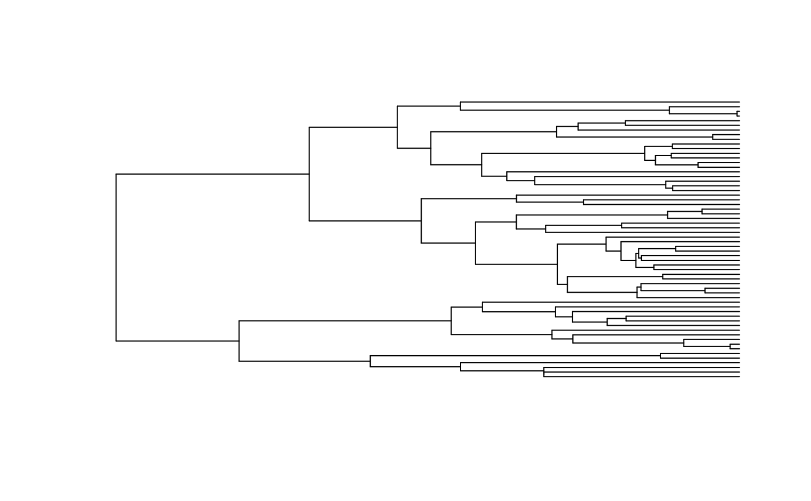

ancRECON_slice.RdInfers marginal ancestral states based on a set of model parameters at a particular time
ancRECON_slice(corhmm.obj, time_slice, edge=NULL, collapse=TRUE, ncores = 1)a corhmm object which is the output of the main corhmm function.
a vector of times to reconstruct (present = 0, root = max(branching.times(phy)))
specifies specific edges to reconstruct only. default is NULL meaning all edges along a slice are reconstructed.
set collapse to be the same as it was during the corhmm run.
number of cores to use during parallelization.
This is a stand alone function for computing the marginal likelihoods at particular points along a branch for a given set of transition rates. ancRECON has the technical details of ancestral state reconstruction if you're interested. The time_slice argument will specify a time point where marginal reconstructions will be produced. You can imagine the time slice intersecting the branches of the phylogeny and doing a reconstruction there rather than at nodes as is typically done.
a data.frame. Each row of time_slice is the time period that was specified. node is the closest tipward node to the slice on a particular branch. position is the amount of time (rootward) from the nearest node. Remaining columns are the marginal probabilities of each state at that particular node. There is also a plotting function that I don't currently export because it's unfinished. The example shows how to access it.
Yang, Z. 2006. Computational Molecular Evolution. London:Oxford.
Boyko, J. D., and J. M. Beaulieu. 2021. Generalized hidden Markov models for phylogenetic comparative datasets. Methods in Ecology and Evolution 12:468-478.
# \donttest{
library(corHMM)
library(viridis)
#> Loading required package: viridisLite
data(primates)
phy <- multi2di(primates[[1]])
data <- primates[[2]]
corhmm.obj <- corHMM(phy = phy, data = data, rate.cat = 1)
#> Warning: Branch lengths of 0 detected. Adding 1.49011611938477e-08
#> State distribution in data:
#> States:0|00|11|1
#>
#> Counts:291021
#>
#> Beginning thorough optimization search -- performing0random restarts
#> Finished. Inferring ancestral states usingmarginalreconstruction.
test <- ancRECON_slice(corhmm.obj, time_slice = c(1, 10, 20, 30, 40, 49),
collapse = TRUE, ncores = 4)
corHMM:::plot_slice_recon(phy, test, col = viridis(3))

#> Error in lastPP$xx[focal[2]]: invalid subscript type 'list'
# }